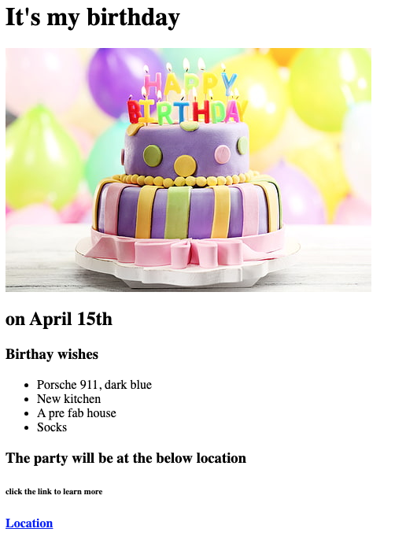
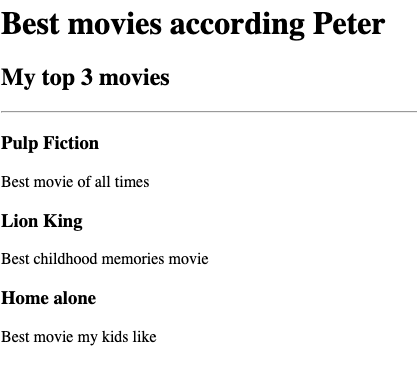

Portfolio
Websites I've made
I have made a few websites writing HTML to practice. They follow below in an ordered list.
- An invite to my birthday
Invite link

- A movie ranking website of my favorite movies
Click this Movie link to go there.

Here's two more webistes I've made previously with Elementor on wordpress. I'd learning to improve these.
- Bentley Aerospace
Link to Bentley Aerospace
- Guesthouse Swedish Escape
Link to Guesthouse Swedish Escape
You can find my details in the contact page, if you would like to reach out.
Link to contact page